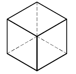
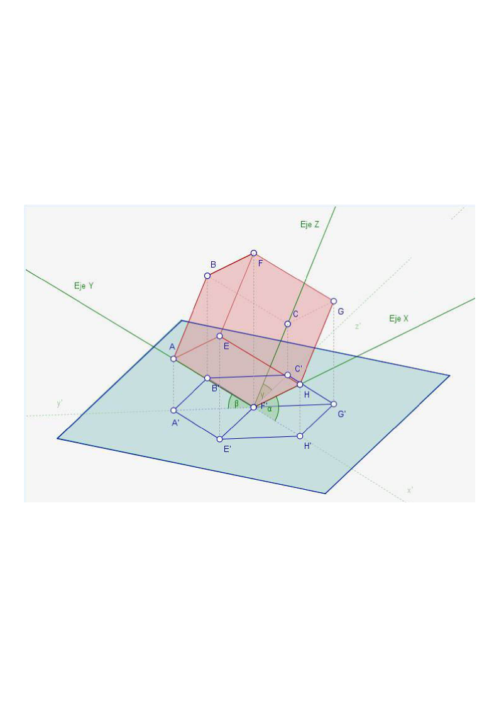
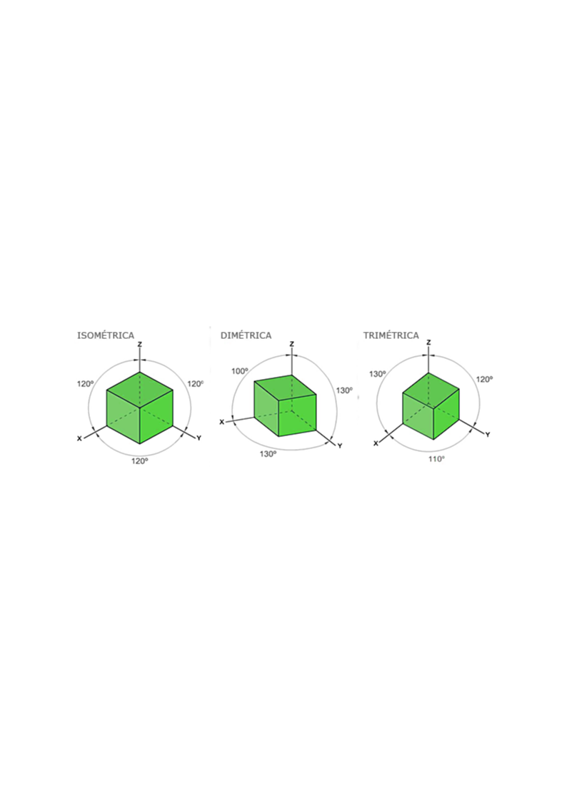
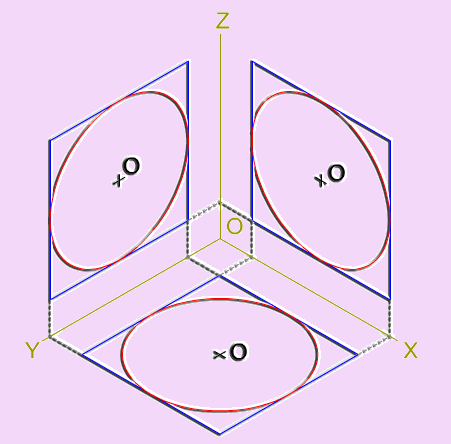
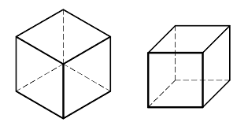
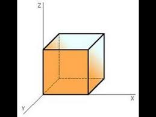
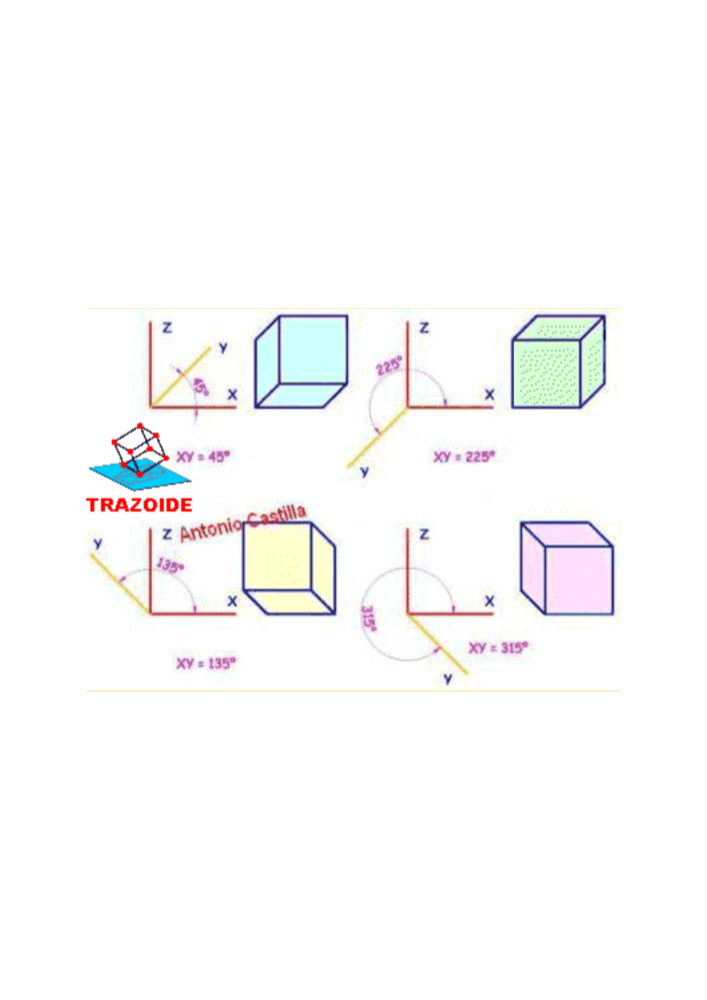
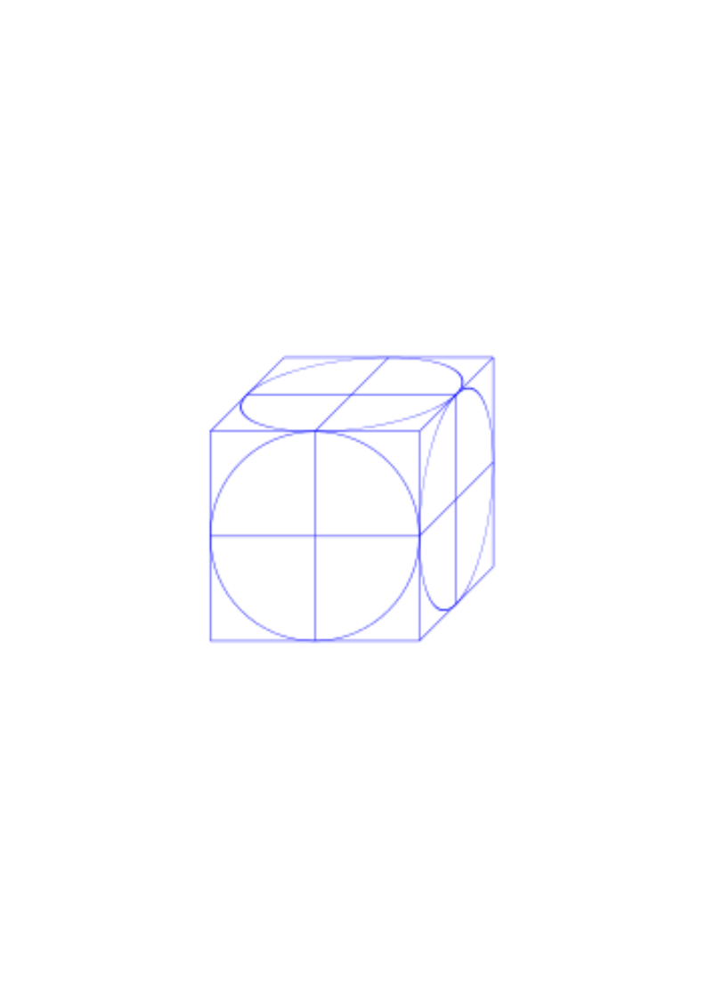

2.3 Sistema axonométrico
Contenido
En este tema se estudia el sistema axonométrico: la representación del objeto en una sola proyección que conserva la sensación de volumen, y las reglas para poder medir en ella.
- El sistema axonométrico y la deformación de magnitudes y ángulos
- Proyecciones ortogonales: perspectiva isométrica (dimétrica y trimétrica)
- Medir en isométrica: descomposición sobre los ejes y circunferencias
- Proyecciones oblicuas: perspectiva caballera (y militar)
Apuntes
El sistema axonométrico
El sistema axonométrico proyecta el objeto, junto con un triedro de ejes de referencia (X, Y, Z), sobre un único plano del cuadro. El resultado es una imagen con sensación de volumen en la que, en general, hay deformación en las magnitudes y en los ángulos: es el precio de “ver bien”.

Según la orientación del plano del cuadro respecto de los tres ejes, la proyección axonométrica ortogonal se clasifica en:
- Isométrica: los tres ejes forman ángulos iguales con el plano del cuadro. Es la más utilizada.
- Dimétrica: dos ejes forman el mismo ángulo y el tercero distinto.
- Trimétrica: los tres ángulos son distintos.
La perspectiva isométrica

Sus propiedades fundamentales:
- Los tres ángulos entre ejes proyectados son iguales, de 120° — y representan ángulos reales de 90° (los tres ejes son perpendiculares entre sí en el espacio).
- La deformación es la misma en los tres ejes: el coeficiente de reducción es 0,816. (En la práctica del dibujo isométrico suele trabajarse sin aplicar la reducción, a “escala isométrica”.)
- Se conserva el paralelismo: dos rectas paralelas en la realidad son paralelas en la perspectiva.
Medir en isométrica
¿Se puede medir en isométrica? Solo en direcciones paralelas a los ejes X’, Y’, Z’, y sabiendo que lo que se mide está afectado por el coeficiente 0,816. Para medir un segmento oblicuo AB se descompone en sus proyecciones sobre los ejes (magnitudes m y n) y se opera con ellas:
Las circunferencias en isométrica
Las circunferencias, al ser proyectadas, se transforman en elipses inscritas en el rombo proyección del cuadrado circunscrito. El centro se encuentra en el cruce de las diagonales del rombo, y no se mide el radio sino el diámetro:

La perspectiva caballera
La caballera es una proyección cilíndrica oblicua: el plano del cuadro es paralelo al plano ZX (el del alzado), y los rayos proyectantes inciden oblicuamente.

Sus propiedades fundamentales:
- Los ejes Z y X forman 90° y todo lo contenido en el plano ZX está en verdadera magnitud, sin deformación de magnitudes ni de ángulos, porque está sobre el plano del cuadro. Por eso el alzado en caballera se dibuja siempre en el plano ZX.
- El eje Y’ forma un ángulo φ que hay que definir como dato (por convenio se mide desde el eje X en sentido horario).
- Sobre el eje Y’ hay una deformación dada por el coeficiente de reducción (también dato de la perspectiva; puede ser de reducción o de ampliación).


Medir y circunferencias en caballera
- En el plano ZX se mide todo directamente: magnitudes y ángulos en verdadera magnitud.
- En los planos ZY’ o XY’ se mide llevando magnitudes sobre los ejes, como en isométrica (sobre Z y X no hay deformación; sobre Y’ se aplica el coeficiente).
- Las circunferencias son circunferencias reales si están en el plano ZX, y elipses si están en ZY’ o XY’ (se trazan llevando puntos, como en isométrica).

La perspectiva militar
La perspectiva militar es la otra proyección cilíndrica oblicua de uso común: en ella el plano en verdadera magnitud es el horizontal (XY) — la planta — lo que la hace útil en urbanismo y arquitectura para representar plantas de edificios y conjuntos.
Material complementario
Presentaciones de clase (Reveal.js)
Perspectiva isométrica: fundamentos y medición en el sistema
Perspectiva caballera: fundamentos y medición en el sistema
Recursos digitales
Perspectiva isométrica (espazoAbalar, Xunta de Galicia)
Curso interactivo sobre la perspectiva isométrica con trazados paso a paso.
Trazoide: de las vistas a la perspectiva
Ejercicios resueltos de paso de vistas diédricas a perspectiva.